1993'ten beri · Değirmendere, Trabzon
Ölçü.
Kesim.
Montaj.
Mermer, granit, kuvars ve porselen tezgahınızı yerinde ölçer, atölyemizde keser, kendi ekibimizle takarız.
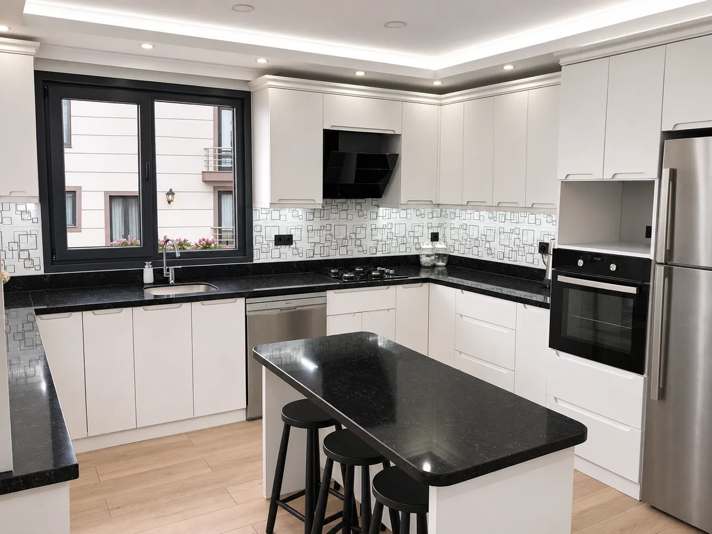
Uygulama · Mutfak tezgahı ve ada
Çalışma şeklimiz
Ölçü
Yerinde ölçü alır, taşı birlikte seçeriz.
Kesim
Değirmendere'deki atölyemizde keser, kenarını işleriz.
Montaj
Taşı getiren ekip takar. 6 kişi, 3 araç.
01 · Taşlar
Taşınızı
seçin.
Mermer, granit, kuvars ve porselen. Hangisini seçerseniz ölçünüze göre keser, yerine takarız.
Mermer
Banyo, merdiven, şömine ve zemin.
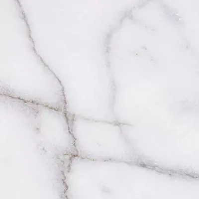
Muğla Beyaz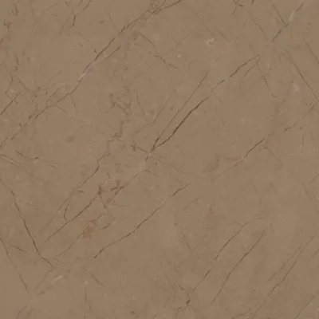
Amasya Bej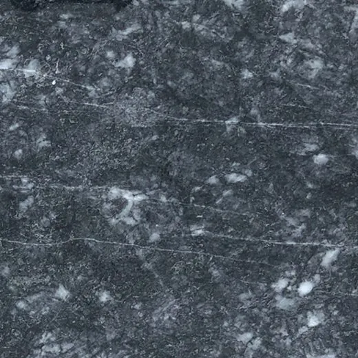
Bursa Siyah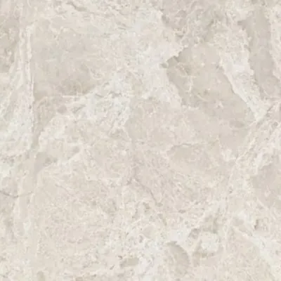
Rustik Bej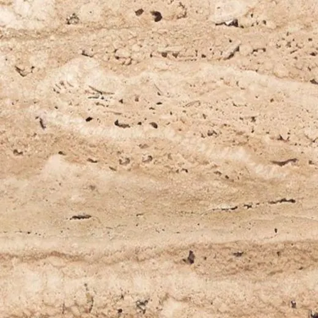
Traverten
Granit
Mutfak tezgahı, merdiven ve dış mekân.
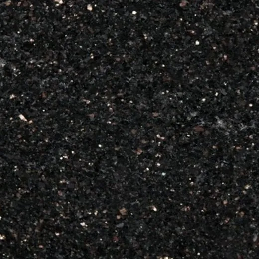
Star Galaxy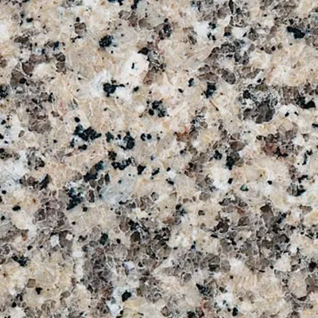
Rosa Minho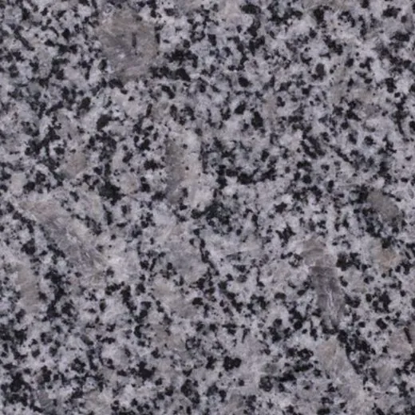
Ankara Füme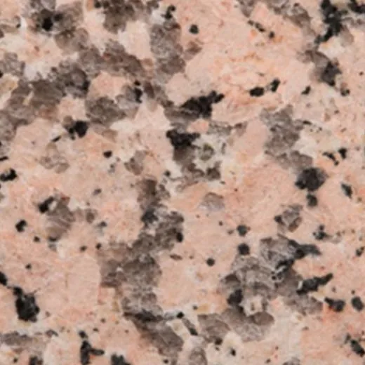
Rosa Porrino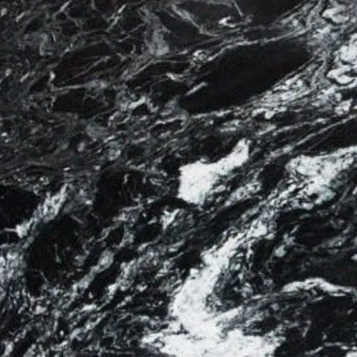
River Black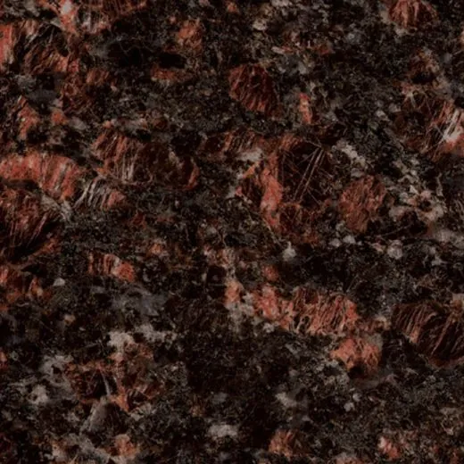
Tan Brown
Kuvars
Mutfak ve banyo tezgahı.
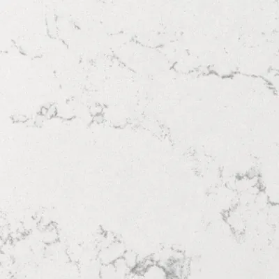
Belenco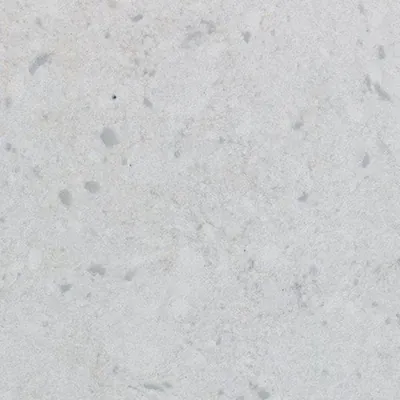
Çimstone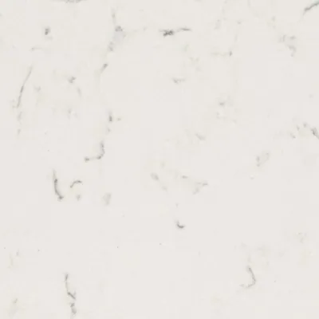
Maestro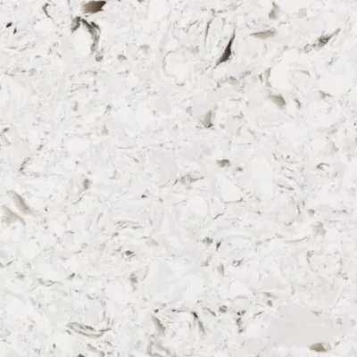
Coante
Porselen
Tezgah ve duvar kaplama.
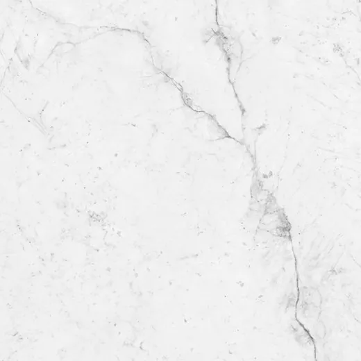
Lamar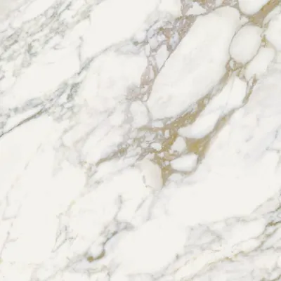
NG Stone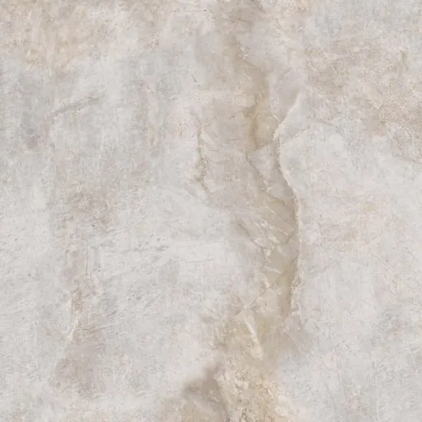
T-One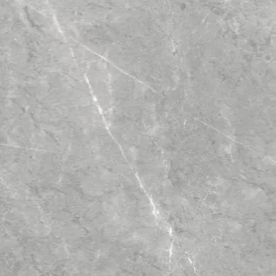
Stonext
02 · Uygulamalar
Yaptığımız
işler.
Ölçüsünü aldığımız, kestiğimiz ve taktığımız tezgahlardan.
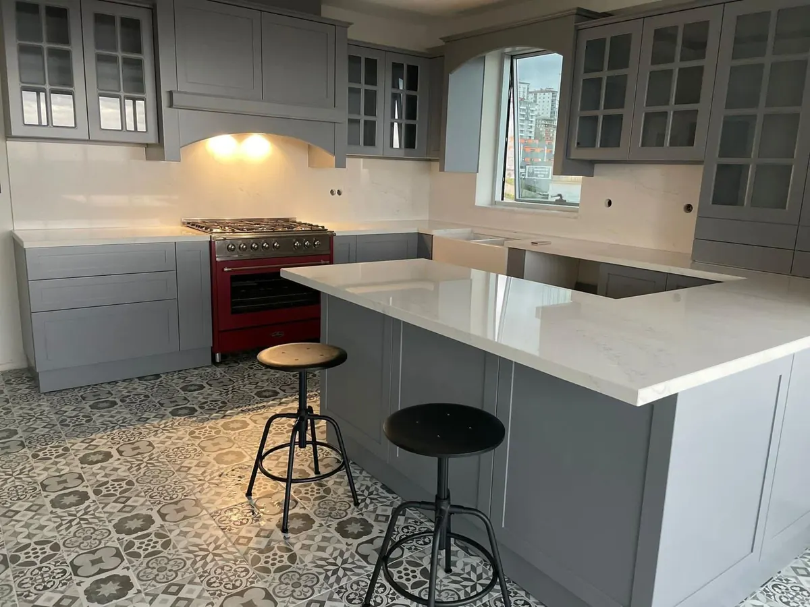
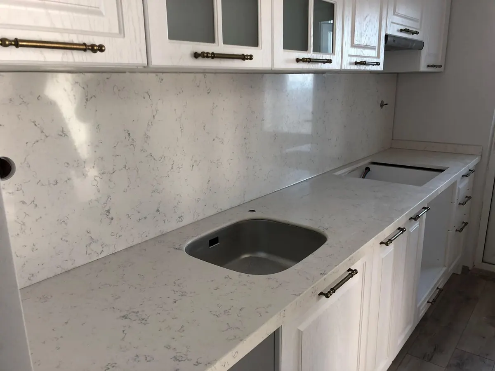
03 · Hizmetler
Ne
yapıyoruz?
Konut, iş merkezi ve kurumsal projelerde üretim ve montaj.
Mutfak tezgahı ve alın kaplama
Ölçüye özel üretim, kesim ve montaj. Alın kaplama dahil anahtar teslim.
Banyo tezgahı
Mermer, granit ve kuvars. Lavabo açılımı ve kenar profili dahil.
Merdiven basamakları
İç ve dış mekân basamak, rıht ve süpürgelik.
Pencere ve balkon parapetleri
Doğal taş pencere denizliği ve balkon parapeti.
Şömine kaplama
Mermer ve doğal taş şömine kaplama, dekoratif işler.
Mezar ve özel işler
Mezar yapımı, anıt ve özel tasarım doğal taş işleri.
Havuz uygulamaları
Havuz çevresi ve iç kaplama.
Markalar
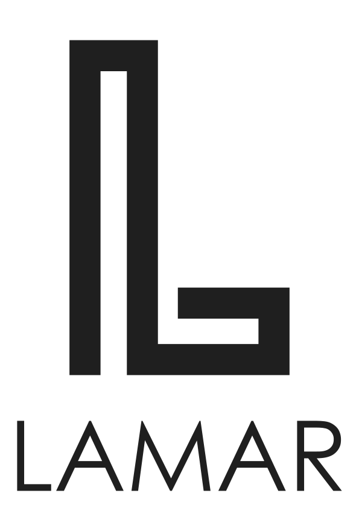
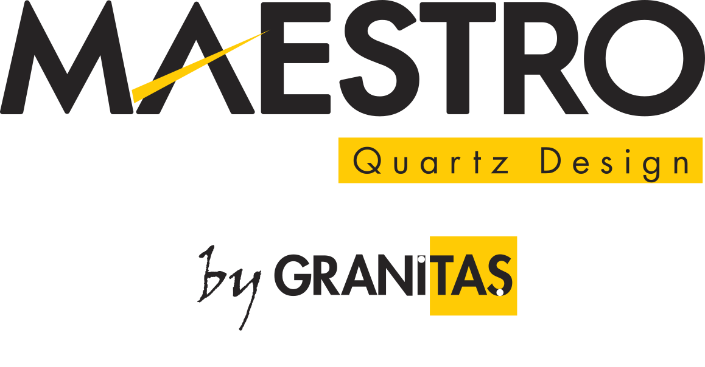
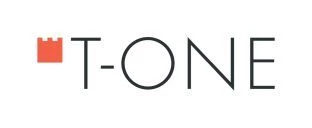
1993Trabzon'da kuruldu
Şeker Mermer İnş. San. ve Tic. Ltd. Şti., 1993'ten bu yana Trabzon ve çevre illerde mermer ve granit imalatı yapıyor. Kuruluşundan bu yana üretim kapasitesini artırarak bölgedeki kurumsal ve profesyonel projelere hizmet veriyor.
İş merkezleri, yapı ve sanayi inşaatları, daireler, mutfak tezgahları, mezarlık, şömine ve mermer pano uygulamalarında üretimi de montajı da kendi ekibimiz yapar.
04 · İletişim
Teklif
alın.
Ölçüyü ve taşı söyleyin, fiyatı çıkaralım. En hızlısı WhatsApp.
- Adres
- Sanayi Mah. Dost Sk. No:41
Değirmendere, Ortahisar / Trabzon - Telefon
- 0462 325 36 01
- 0533 413 54 21
- E-posta
- info@sekermermer.com